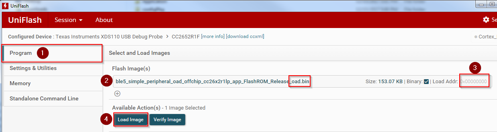
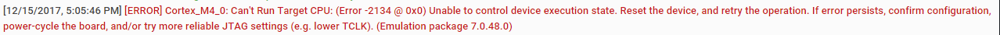

Creating a Production Image¶
A production image is an image that is ready for flashing at the factory, and to be released in a commercial OAD enabled product.
Disable DEBUG Define in Project Setting.¶
By default, the DEBUG feature in the BIM is disabled. This can be enabled during development and for evaluation of the TI OAD solution, but is not recommended for a production OAD build as it will bypass CRC checks on the application image.
If DEBUG is defined in the Compiler Predefined Symbols (Project Settings ->
Build -> ARM Compiler -> Predefined Symbols) the Off-Chip BIM will not check
the CRC of the image before booting. This removes a layer of redundancy in the
system in favor of allowing the developer to load an OAD image straight from the
IDE. The On-Chip OAD BIM does not skip the CRC check, but if the application is
loaded directly from the IDE with invalid CRC in the header, the BIM will on
boot invalidate the crc status (crcstat = CRC_INVALID) and jump into the
persistent application.
In order to disable the debug fatures in the BIM, disable the DEBUG define:
xDEBUG
Device Trim¶
It may be desirable to remove the secondary device trim in the application for production images. See Device trim for more information.
Secure OAD: Change default keys¶
If you are using the secure version of OAD, new OAD keys should be generated and stored on the device. It is a security risk to use the placeholder keys that are provided with TI as these are publically available.
See Generating New Security Keys (Embedded) for more information on how to generate and install new keys on the device. If using unsecure OAD, this step is not necessary.
Create Merged Production Image¶
Please refer to Task 4 – Bonus: Creating a Production Image in SimpleLink Academy Enhanced OAD Module for SimpleLink CC2640R2 SDK to learn how to creata a merged production image that contain BIM, Application, Stack and the Persistent Application (On-chip only).
Loading a Production Image¶
Images loaded straight from the IDE will not have a valid CRC or signature. However, the oad_image_tool will add the CRC and signature automatically at the completion of each build. Refer to Figure 91. for a diagram of the build process.
Warning
If flashing the BIM image (or a merged image containing BIM) using uniflash,
be sure that the Keep CCFG data box is not checked. (Settings &
Utilities –> Download). BIM will use a custom CCFG, so it is important that
any existing image on the device is removed. Another safeguard is the mass
erase the device before starting with OAD.
It is necessary to load the device using the *_oad.bin application file
that is output by the oad_image_tool using UNIFLASH.
- The binary from the tool will be placed in the build folder alongside the default
.outfile.
The address offset should be 0x0000000 as shown in the screen capture below

Note the following error is benign and can be ignored for OAD images. Verify the device has booted correctly by verifying the terminal output.
